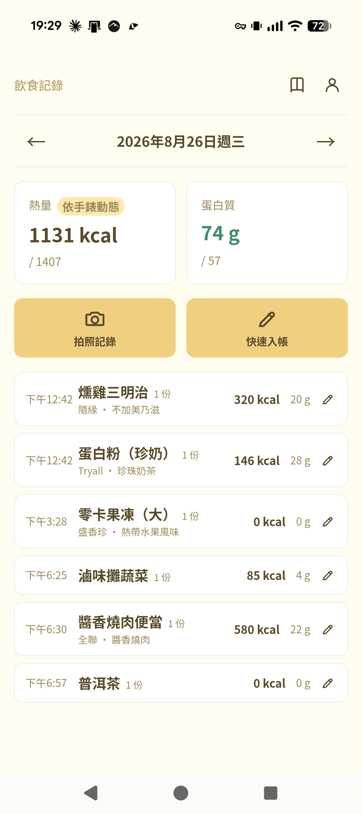
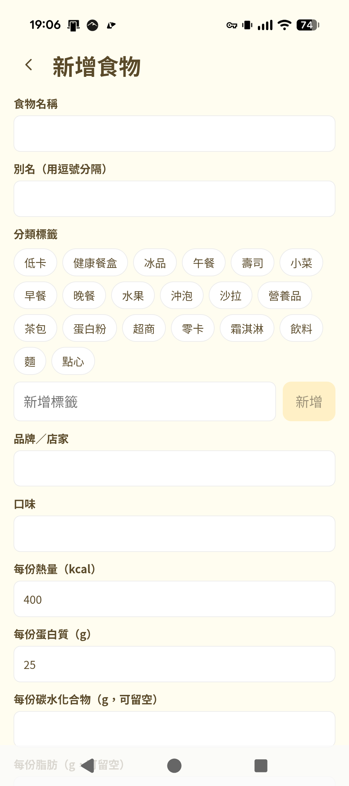
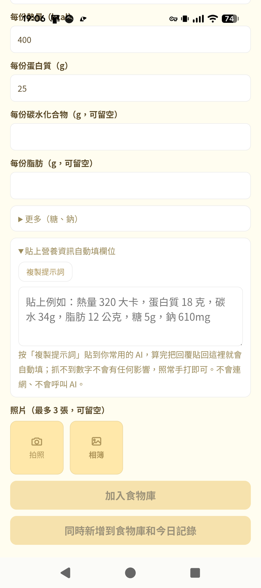
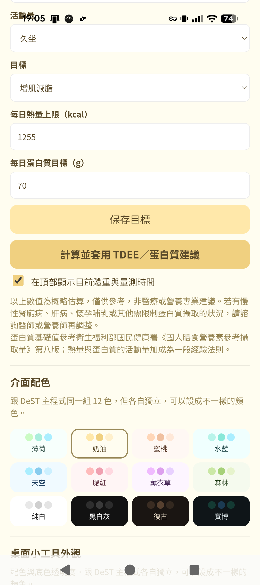

DeST 系列 · 食記
Android 獨立 App
拍張照，
拍張照，
就記下這一餐
食記是單純好用的飲食記錄 App，拍照就能估算熱量， 也可以接手錶讀取體重跟消耗，桌面小工具隨時看今天吃了多少。 跟 DeST 角色扮演完全無關，可以單獨安裝使用，不用先裝 DeST。

這是什麼？
用三句話講完。
1
拍照記錄，不用手動查熱量
吃東西前拍張照，AI 幫你估算大概的熱量，也可以手動快速輸入。
2
接手錶自動抓數字
連接 Android Health Connect，體重、體脂、手錶消耗的熱量都能自動同步進來。
3
桌面小工具一眼看進度
Android 主畫面小工具顯示今天吃了多少、還剩多少額度，不用打開 App。
有什麼功能？
挑幾個重點看。
01 · 拍照估熱量
拍下這餐，AI 幫你估算
不用自己查食物熱量表，拍張照片交給 AI 判斷大概吃了多少。
02 · 快速記錄
手動輸入也很快
懶得拍照時可以直接快速輸入品項與熱量，記錄不拖泥帶水。
03 · 接手錶讀數據
體重、體脂、消耗熱量自動同步
連接 Health Connect 後，體重計、手錶量到的數字會自動進來，今日可攝取額度還會依手錶動態消耗調整。
04 · 桌面小工具
今天吃了多少，一眼就看到
Android 主畫面小工具即時顯示今日記錄與剩餘額度，點一下直接進 App 補記錄。
跟 DeST 桌面版／手機版是各自獨立的 App，不需要先裝 DeST 才能用。目前 AI 服務金鑰要在食記裡自己填一次，跟 DeST 是分開存放的，換機或重灌都要重新填。
畫面速覽
實機截圖，不是示意圖。




準備好開始記錄了嗎？
食記免費下載、無廣告使用，資料存在手機本機。
*App 本身免費無廣告，但拍照估價等 AI 功能需自備 API Key 或自架本機 AI；各家 AI 服務費用請自付，作者不介入金流。